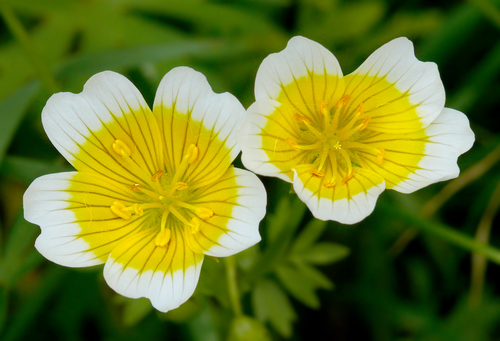

Limnanthaceae
Meadowfoam Family
Limnanthaceae is a small family of dicotyledonous flowering plants in the order Brassicales, comprising annual herbs native primarily to temperate North America. Commonly known as meadowfoams, they are characterized by pinnately dissected leaves, often showy flowers with distinct sepals and petals, and fruits that split into nutlet-like segments.
Overview
The Limnanthaceae family includes just two genera, Limnanthes and Floerkea, with a total of about 8-11 species. These plants are small, somewhat succulent annual herbs. They are almost entirely restricted to temperate North America, particularly western North America (California, Oregon), where many species are associated with vernal pools – temporary springtime pools that dry up in summer. One species, Floerkea proserpinacoides, extends across North America and into northeastern Asia.
Members of the family typically have alternate leaves that are pinnately dissected or compound. The flowers are actinomorphic (radially symmetrical), usually with 3-5 distinct sepals and 3-5 distinct petals, often white or yellow, sometimes bicolored or with veins. The ovary is superior but deeply lobed, appearing almost like separate carpels united only by the central (gynobasic) style. The fruit is a schizocarp that splits into one-seeded, smooth or tuberculate nutlets (mericarps).
Economically, Limnanthes alba (white meadowfoam) is cultivated for the unique oil extracted from its seeds (meadowfoam seed oil), which is highly stable and valued for use in cosmetics and potentially as an industrial lubricant. Phylogenetically, Limnanthaceae belongs to the order Brassicales (mustard order), part of the Rosid clade of eudicots.
Quick Facts
- Scientific Name: Limnanthaceae R.Br.
- Common Name: Meadowfoam Family
- Number of Genera: 2 (Limnanthes, Floerkea)
- Number of Species: Approximately 8-11
- Distribution: Temperate North America (esp. West Coast), one species also NE Asia
- Evolutionary Group: Eudicots - Rosids - Malvids - Brassicales
Key Characteristics
Growth Form and Habit
Small, somewhat succulent annual herbs, often found in seasonally wet habitats like vernal pools.
Leaves
Leaves are alternate, petiolate, and pinnately dissected or compound. Stipules are absent.
Inflorescence
Flowers are borne solitarily on long pedicels from leaf axils, or sometimes in few-flowered, raceme-like arrangements.
Flowers
Flowers are bisexual, actinomorphic (radially symmetrical), and typically (3-)5-merous. Key features include:
- Calyx: (3-)5 sepals, distinct or slightly fused at the base, persistent.
- Corolla: (3-)5 petals, distinct, often white or yellow, sometimes bicolored or with colored veins, sometimes notched at the apex.
- Androecium: Stamens number 6 or 10 (typically twice the number of petals), distinct. Nectar glands are often present at the base of the stamens opposite the sepals.
- Gynoecium: Ovary is superior, composed of (2-)3-5 carpels that are deeply lobed, appearing almost distinct but united by a common, central (gynobasic) style that arises from between the lobes. Each carpel/lobe contains a single basal ovule. The style terminates in a capitate or slightly lobed stigma.
Fruits and Seeds
The fruit is a schizocarp that splits into (2-)3-5 indehiscent, one-seeded nutlets (mericarps). The nutlets are often smooth or tuberculate (warty).
Chemical Characteristics
The family produces glucosinolates (mustard oil glycosides), characteristic of the order Brassicales. Seeds are rich in unusual long-chain fatty acids (meadowfoam oil).
Field Identification
Identifying Limnanthaceae involves recognizing their herbaceous habit, dissected leaves, characteristic flowers, and habitat:
Primary Identification Features
- Habit: Small, somewhat succulent annual herbs.
- Habitat: Often found in vernal pools or seasonally moist places (esp. Western N. America).
- Leaves: Alternate, pinnately dissected or compound.
- Flowers: Actinomorphic, (3-)5 sepals, (3-)5 distinct petals (often white/yellow), 6 or 10 stamens.
- Ovary/Style: Ovary superior but deeply lobed, with a central (gynobasic) style.
- Fruit: Splits into 3-5 one-seeded nutlets.
Secondary Identification Features
- Petal Color/Markings: Often characteristic for species (e.g., white with yellow base in L. douglasii).
- Nutlet Surface: Smooth vs. tuberculate.
- Flower Size: Limnanthes flowers are generally larger and showier than the minute flowers of Floerkea.
Seasonal Identification Tips
- Spring: Peak flowering season, especially in vernal pool habitats as they begin to dry.
- Early Summer: Fruits (nutlets) develop as plants senesce.
- Dry Season: Plants are absent, surviving as seeds in the soil.
Common Confusion Points
Limnanthaceae might be confused with other small herbs found in similar habitats:
- Ranunculaceae (Buttercup family): Some aquatic or wet-ground buttercups (e.g., Ranunculus sect. Batrachium) have dissected leaves and white/yellow flowers, but typically have numerous stamens, numerous distinct carpels (apocarpous) developing into achenes, and lack glucosinolates.
- Brassicaceae (Mustard family): Also in Brassicales and possess glucosinolates. Often have dissected leaves and white/yellow flowers, but flowers are typically 4-merous with 6 stamens (4 long, 2 short), and fruit is a silique or silicle (a 2-valved capsule).
- Apiaceae (Carrot family): Often have compound or dissected leaves, but flowers are typically small, borne in umbels, with 5 petals, 5 stamens, and an inferior ovary developing into a schizocarp splitting into 2 mericarps.
- Geraniaceae (Geranium family): Often have lobed or dissected leaves, 5-merous flowers with 10 stamens, and a characteristic schizocarpic fruit with elastic styles ('crane's bill').
Field Guide Quick Reference
Look For:
- Annual herbs (often in vernal pools)
- Leaves alternate, pinnately dissected/compound
- Flowers actinomorphic, (3-)5 distinct petals (white/yellow)
- 6 or 10 stamens
- Ovary superior, deeply lobed, gynobasic style
- Fruit splits into nutlets
Key Variations:
- Flower size and color patterns
- Leaf dissection degree
- Nutlet surface texture
- Number of flower parts (3 vs. 5)
Notable Examples
The family comprises two genera, primarily found in North America.

Limnanthes douglasii
Douglas' Meadowfoam / Poached Egg Plant
A common and variable species native to California and Oregon, often found in vernal pools and moist meadows. Known for its showy, bowl-shaped flowers, typically white with a yellow center (hence 'poached egg plant'), though subspecies vary. Leaves are pinnately dissected.

Limnanthes alba
White Meadowfoam
Native to California and Oregon. Cultivated as an oilseed crop for meadowfoam seed oil. Flowers are typically pure white. Leaves pinnately compound.

Floerkea proserpinacoides
False Mermaid / False Mermaidweed
Represents the second genus, Floerkea. A delicate annual herb found in moist woodlands and floodplains across North America and into NE Asia. Differs from Limnanthes in having minute, inconspicuous flowers with only 3 sepals and 3 petals (sometimes absent) and 6 stamens. Leaves are pinnately compound.
Phylogeny and Classification
Limnanthaceae is placed in the order Brassicales, which belongs to the Malvid clade within the Rosids. This order is characterized by the production of glucosinolates (mustard oils).
Within Brassicales, Limnanthaceae represents a distinct lineage. Molecular phylogenetic studies place it sister to, or near, other families like Koeberliniaceae, Bataceae, and Salvadoraceae, often forming part of the early diverging lineages within the order, separate from the core group containing Brassicaceae, Capparaceae, and Cleomaceae. Its unique gynoecium structure (deeply lobed ovary with a gynobasic style) is also notable within the order.
Position in Plant Phylogeny
- Kingdom: Plantae
- Clade: Angiosperms (Flowering plants)
- Clade: Eudicots
- Clade: Rosids
- Clade: Malvids
- Order: Brassicales
- Family: Limnanthaceae
Evolutionary Significance
Limnanthaceae, though small, is significant for several reasons:
- Brassicales Phylogeny: Its position helps understand the relationships among the early diverging lineages of the Brassicales order.
- Adaptation to Vernal Pools: Represents a lineage highly adapted to the ephemeral conditions of vernal pools, a unique and threatened habitat type.
- Gynoecium Morphology: The deeply lobed ovary with a gynobasic style is an unusual feature, potentially offering insights into floral development and evolution within Brassicales.
- Economic Botany: The unique fatty acid composition of meadowfoam seed oil makes Limnanthes alba an interesting specialty crop.
- Biogeography: Its primarily North American distribution adds to the biogeographic patterns seen within Brassicales.